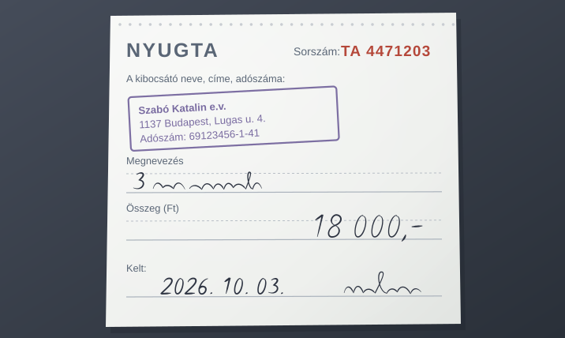

Összeg18 000Ft
Hová kerültaz októberi bevételedhez
Feltöltöttedszombaton, fotóként, 1 oldal
Hol tart
Feltöltve
Szombat, október 3., 18:40
Bence látta
Hétfő, október 5., 9:05
Feldolgozva
Hétfő, október 5., 9:20
Beadva
A IV. negyedéves bevallással, legkésőbb január 12-én.
Bence megjegyzése
Rendben, hozzáadtam az októberi bevételedhez. Ha lesz még vásár, elég a nap végén egyszerre lefotóznod a nyugtatömb lapjait.
hétfő 9:20